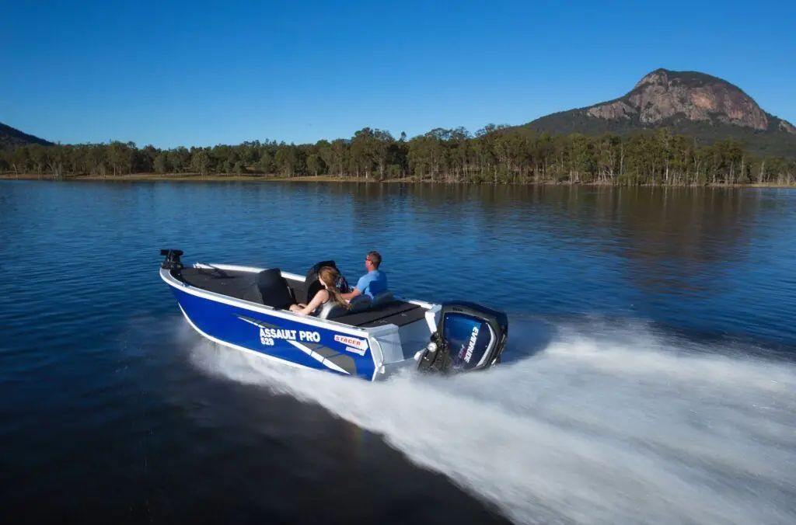

794 × 676, 60% of the pagedrawn 1,024 × 676: one held pixel to one CSS pixelthe ceiling: it cannot reach the page’s footprints at 96 dpi
the name, under the boat’s lowest point
the four facts
who it is for · the total
The printed quote’s cover · the three rules on a 1,024 px photograph
The Stacer 529 Assault Pro’s photograph is held at 1,024 × 676, the size the dealership’s own mirror serves. Each sheet draws it exactly as its direction would. The dashed outlines are where the type goes; no quote is drawn on them.
A · The boat is the page

794 × 676, 60% of the pagedrawn 1,024 × 676: one held pixel to one CSS pixelthe ceiling: it cannot reach the page’s footprints at 96 dpi
B · The configuration book

658 × 370, 27% of the pagedrawn 658 × 434: 1.56 held pixels to one CSS pixelcut 16 : 9 from its top and foot onlyprints at 149 dpi
C · Northside’s water
658 × 370 on the plate, 27% of the pagedrawn 658 × 434: 1.56 held pixels to one CSS pixelthe band is drawn, not held: any sizeprints at 149 dpi